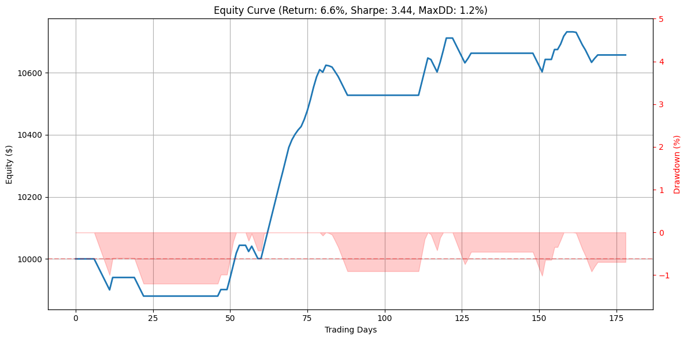

A Transformer-Based Probabilistic Trading Strategy on AAPL
14 October 2026
One name, one model. A transformer is trained on Apple's daily bars to estimate the probability that the next close is higher. The book only buys when that probability clears a threshold and two ordinary trend filters agree, then it gets out at a 4% profit, a 2% loss, or after five sessions. On the run stored in the notebook, $10,000 finished at $10,657.
Introduction
The notebook downloads AAPL from Yahoo Finance from 1 January 2023 through 31 December 2026, which in practice means through the last session available at execution. Four features are built after a short indicator warmup: the log return, momentum defined as the close minus its 5-day mean, a 14-day RSI, and the MACD line minus its signal line. Each example is a sequence of 20 days. The label is 1 when the next close is above the current close.
The last 20% of those sequences is held out in time. Nothing is shuffled. In this execution that test slice is 179 signals, aligned to 180 closes. There is no second asset and no index benchmark in this notebook. An earlier file in the repo, Transformer_with_Probabilistic_Output.ipynb, is a smaller PLTR experiment that uses only return and momentum. The results/ folder is an older Nifty 50 portfolio. Neither is the run on this page.
Model
The network is a binary classifier. A linear layer maps the 4 features to 32 dimensions. Two transformer encoder layers, each with 4 attention heads, run over the sequence. The feed-forward width and dropout are left at the PyTorch defaults, 2048 and 0.1. The sequence is then flattened, passed through a dense layer of 64 with a ReLU, and a single sigmoid unit emits the probability that the next close is higher.
class TransformerBinaryClassifier(nn.Module):
def __init__(self, input_dim, seq_len, d_model=32, nhead=4, num_layers=2):
super().__init__()
self.embedding = nn.Linear(input_dim, d_model)
encoder_layer = nn.TransformerEncoderLayer(
d_model=d_model, nhead=nhead, batch_first=True)
self.transformer = nn.TransformerEncoder(encoder_layer, num_layers=num_layers)
self.fc_out = nn.Sequential(
nn.Linear(d_model * seq_len, 64), nn.ReLU(),
nn.Linear(64, 1), nn.Sigmoid()
)
def forward(self, x):
x = self.embedding(x)
x = self.transformer(x)
return self.fc_out(x.reshape(x.size(0), -1))Training is binary cross-entropy with Adam at a learning rate of 0.001, for 20 epochs and a batch size of 32. The loss printed each epoch is the sum of the per-batch mean losses, so a value near 16 is a stack of batch losses, not a per-sample cross-entropy. The notebook does not set a random seed, so this path is one draw.
Trading rules
After training, the model is scored on the test loader. Four thresholds are tried, 0.50, 0.60, 0.70 and 0.80, and the one with the highest F1 on the up class is kept. This run kept 0.50. That comparison is done on the test labels, so the threshold is not chosen out of sample.
A day is an entry only when all three conditions hold: the probability is above the threshold, the RSI on the last step of the sequence is above 50, and the MACD difference on that same step is positive. The backtest buys the next close in the test-window price array, for a fixed $1,000 inside a $10,000 cash account. Size does not compound, and a new signal is allowed while an older one is still open. Each signal is its own $1,000.
The position is then watched for five sessions. If a later close is 4% or more above the entry, the trade books +4% of $1,000. If a later close is 2% or more below the entry, it books −2%. The fill is the barrier, not the close beyond it. If neither barrier prints and the position is still open, the actual percent change at the fifth session is booked. There are no commissions and no slippage.
Training
Epoch losses from this run, each one the sum of the batch losses:
| Epoch | Loss | Epoch | Loss |
|---|---|---|---|
| 1 | 16.3763 | 11 | 15.9777 |
| 2 | 16.0143 | 12 | 15.9083 |
| 3 | 16.0105 | 13 | 15.8891 |
| 4 | 16.0252 | 14 | 15.8352 |
| 5 | 15.9970 | 15 | 15.8018 |
| 6 | 15.9745 | 16 | 15.7726 |
| 7 | 15.9456 | 17 | 15.7397 |
| 8 | 15.9088 | 18 | 15.8690 |
| 9 | 15.9214 | 19 | 15.7763 |
| 10 | 15.9798 | 20 | 15.8154 |
The best threshold on the test F1 search was 0.50.
Results

Equity (left axis) and drawdown (right axis) from the notebook figure. The title rounds this run to a 6.6% return, a Sharpe of 3.44 and a 1.2% maximum drawdown. The dashed line is the starting $10,000.
| Metric | This run |
|---|---|
| Starting capital | $10,000 |
| Position size | $1,000, fixed |
| Ending equity | $10,657 |
| Total return | 6.57% |
| CAGR | 9.43% |
| Sharpe ratio | 3.44 |
| Maximum drawdown | 1.20% |
| Win rate | 54.55% |
| Trades | 77 |
| Winning trades | 42 |
| Decision threshold | 0.50 |
| Test signals / closes | 179 / 180 |
A win is a take-profit, or a time exit whose close is above the entry. A stop is a loss. Forty-two of the seventy-seven entries qualified, which is the 54.55% win rate the notebook prints.
Reading the numbers
The drawdown stays near 1.2% because the bet is small and the loser is capped. One stop loses $20, which is 0.20% of the $10,000 account, and the path only reaches a 1.20% peak-to-trough decline. The same cap is why a 54.55% win rate against a +4% / −2% barrier can print a smooth equity line before costs. Time exits do not get the barrier: they book whatever the fifth close actually did.
The Sharpe of 3.44 is the Sharpe of this cash path. Profit is added on the loop step of the signal, not marked to the exit date, and days with no new PnL contribute a zero return. It is not the Sharpe of a fully invested AAPL position, the risk-free rate is zero, and nothing has been charged for spread or commission. CAGR annualises a test window of 179 signals, about eight and a half months of sessions, so the 9.43% figure is a short sample scaled by (steps − 1) / 252.
Two further caveats sit in the code rather than in the market. The threshold is the one that maximised F1 on the same test labels the backtest uses. And because dropout is on and no seed is set, running the notebook again will not reprint 6.57% and 3.44.
Research record of one notebook execution. Not a forecast, and not investment advice.
Code
The entry filter and the barrier rules, as the notebook writes them:
entry_signal = (all_probs > best_threshold) & (rsi > 50) & (macd > 0)
initial_cash = 10000
position_size = 1000
sl_pct, tp_pct = -0.02, 0.04The full script, including the data pull, the training loop and the metric arithmetic, is the single cell of A_Transformer_Based_Probabilistic_Trading_Strategy.ipynb.